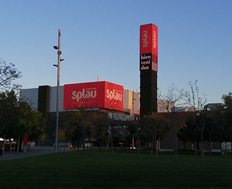
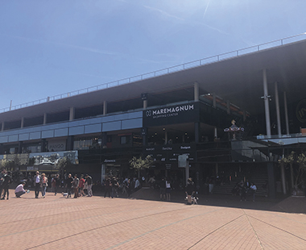
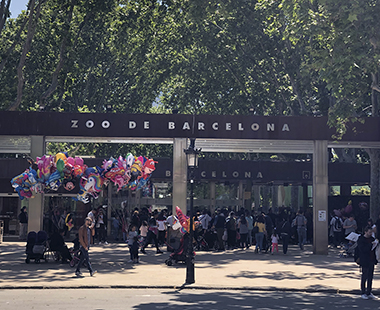

OCI I ENTRETENIMENT
SPLAU

L’Splau és un centre comercial contruït al 2010 a Cornellà de Llobregat al costat de l’estadi RCD Espanyol amb 33.100m.
El Splau és famos perquè hi han 148 comerços i 2.800 aparcaments i això va fer que la seva fama pugés perquè va crear 1.700 llocs de treballs nous.
Com arribar
MAREMAGNUM

El Maremagnum és un centre comercial inagurat al 1995 per l’arquitecte Helio Piñón amb 22.000m², té 3 plantes plenes de botigues de tot tipus amb un pàrquing de 850 places.
Aquest centre és molt famós perquè al costat esta ubicat l’aquari de Barcelona, és l’unic centre comercial que té el permís de obrir els 365 dies i una de les raons perquè es va construir el centre va ser pels Jocs Olímpics del 1992.Com arribar
ZOO DE BARCELONA

El Zoo de Barcelona ubicat al Parc de la Ciutadella va ser fundat al 1892 amb l’objectiu de la conservació, la inventigació i l’educació.
Aquest Zoo va ser molt famós per un animal el “Floquet de Neu” l’únic goril·la albí conegut, el goril·la va estar del 1966 fins al 2003.Com arribar